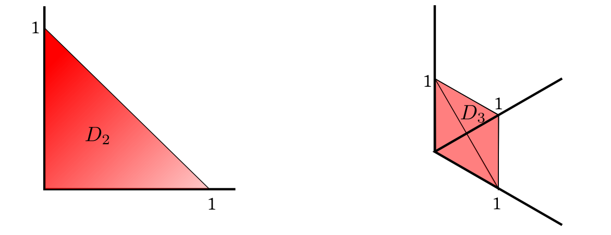

The multinomial distribution is a direct generalisation of the binomial distribution. We often think of the $Binom(n,p)$
distribution as the distribution of the number, $X$, of heads obtained in $n$
independent tosses of a coin with
$P(head)=p.$ If we replace the coin with a die with probabilities $p_1,...,p_6$ for the
different faces, and let
$X_i$ denote the frequency of the $i$-th face in $n$ independent rolls of the die, then
the joint distribution of
$(X_1,...,X_6)$ is called multinomial with parameters $n,\v p$, where $\v p=(p_1,...,p_6)'.$
In general, we have the following definition.
Just as $Bernoulli(p)\equiv Binom(1,p)$ is an important special case, and deals with a single toss of the coin, similarly
$Multinom(1,\v p)$ deals with a single roll of the die.
The following facts are simple generalisations of corresponding facts from the binomial distribution.
In particular, we can think of $Multinom(n,\v p)$ as the distribution of the sum of $n$ independent $Multinom(1,\v p)$
random vectors.
Suppose we roll the same die twice independently. Accordingly we get
$\v X,\v Y$ both having $ Multinom(1,\v p)$ distribution. Let $\v
X=(X_1,...,X_k)$, $\v Y=(Y_1,...,Y_n)$ and $\v
p=(p_1,...,p_k)$, then
$\forall i~~E(X_i) = E(X_i^2)=p_i.$
$\forall i\neq j~~E(X_iX_j) = 0$
$\forall i,j~~E(X_iY_j) = p_ip_j$
An immediate consequence of this is the following theorem.
Now we are going to work with a multivariate distribution called the Dirichlet distribution, which has is a multivariate generalisation of the Beta distribution.
Look at this density carefully and get comfortable with the fact that there are only $p$ of the $x_i$'s, while
we have $p+1$ of the $a_i$'s.
When $p=1$ we have $X_1\sim Beta(a_1,a_2).$ This is supported on $D_1 = [0,1].$
For $p=2$ and $p=3$ the supports are shown below.

Supports of Dirichlet distribution
In general, shapes like $D_p$ are called simplices (singular simplex) in ${\mathbb R}^p.$
It is not immediately obvious that the total integral of this function is indeed 1. However, it is easy for $p=1,$ because
if $X_1\sim Dir(a_1,a_2)$ then $X_1\sim Beta(a_1,a_2).$
Starting with this as the basis, we can use induction over $p$ to establish the general case (easy, try it!).
The following properties are all obvious from the definition.
We can immediately write down the mean (i.e., expectation) and variance of each $X_i$ from results of Beta distribution.
EXERCISE 2: If $(X_1,...,X_p)\sim Dir(a_1,...,a_p,a_{p+1}),$ then find the joint distribution of $(X_1+X_2,X_3,...,X_p).$
EXERCISE 3: Let $\v \Pi$ be a random vector $(\Pi_1,...,\Pi_k,1-\Pi_1-\cdots\Pi_k),$ where
$(\Pi_1,...,\Pi_k)\sim Dir(a_1,...,a_{k+1}).$ Let the conditional distribution of $\v
X$ given $(\Pi_1,...,\Pi_k)$ be $Multinom(n,\v \Pi).$
Then show that the conditional distribution
of $\v \Pi$ given $\v X$ is $Dir(a_1+X_1,...,a_{k+1}+X_{k+1}).$
This is the multivariate analogue of beta-binomial distribution used in Bayesian machine learning that we had discussed earlier.